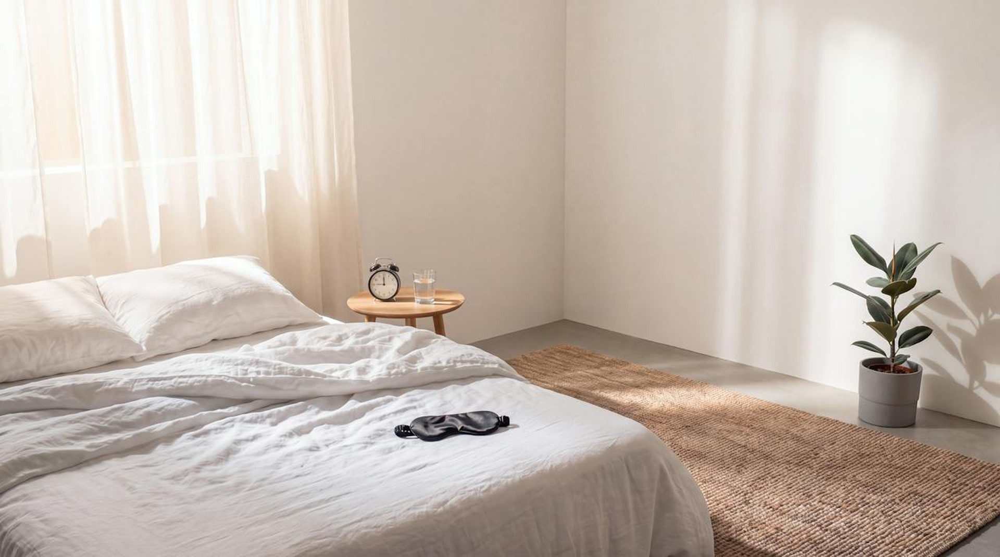

Layer one: sleep
Sleep is the repair shift.
48%
lower mortality risk for the most regular sleepers. Regularity beat duration
Same bedtime, every day: 9 PM to 5 AM
Last meal three hours before bed, screens off an hour before

09 / 21
Windred, Sleep 2023. Piantino, PNAS 2024